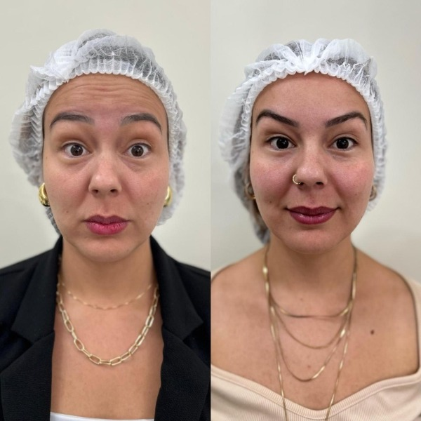
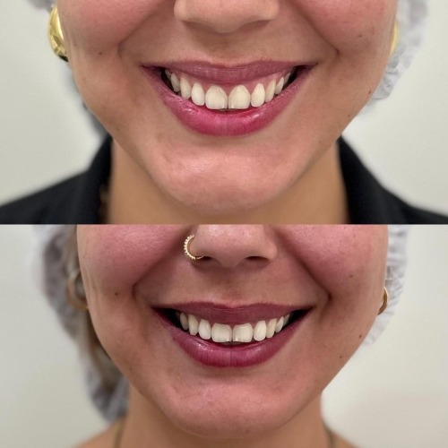
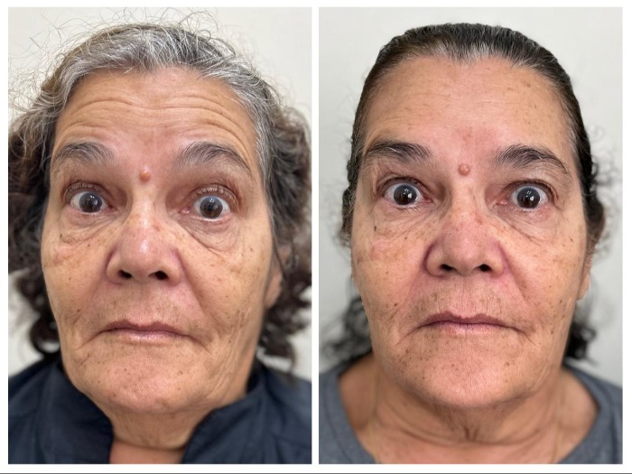

Linhas de expressão na testa
Marcas que aparecem com frequência e deixam o rosto com aspecto mais cansado.

Suavize linhas de expressão com naturalidade e planejamento personalizado.
Procedimento realizado com avaliação clínica individual para resultados naturais e seguros.
Resposta rápida da equipe da clínica.
Marcas que aparecem com frequência e deixam o rosto com aspecto mais cansado.
Linhas dinâmicas que se destacam ao sorrir ou ao contrair a musculatura facial.
Exposição gengival acima do desejado ao sorrir, com impacto estético perceptível.
Sobrecarga muscular e tensão facial que podem ser avaliadas em conjunto com a queixa estética.
Contrações repetidas que tornam as linhas mais evidentes com o passar do tempo.
O objetivo é preservar leveza facial sem endurecer a identidade do rosto.
Uma aplicação objetiva, feita em pouco tempo e com orientação adequada.
Cada caso é avaliado individualmente para definir pontos e intensidade de aplicação.
Pacientes de Alphaville e região procuram um efeito sofisticado, discreto e bem indicado.
Resultados reais obtidos com avaliação clínica individual.



Entendimento da anatomia facial, da queixa principal e da indicação do procedimento.
Definição cuidadosa dos pontos e do objetivo estético com foco em naturalidade.
Execução objetiva e segura, com orientações claras para o pós-procedimento.
Revisão do resultado para acompanhar a resposta muscular e a harmonia final.

Atendimento com critério técnico, leitura facial cuidadosa e foco em naturalidade.

Planejamento individual voltado ao equilíbrio das expressões e ao conforto do paciente.
Uma condução segura, acolhedora e bem indicada para quem busca toxina botulínica em Alphaville.
Não quando o planejamento é bem indicado. O objetivo é suavizar marcas preservando naturalidade e movimento.
O tempo pode variar conforme a resposta muscular e os hábitos do paciente, mas a avaliação clínica orienta a melhor previsão para cada caso.
A aplicação é rápida e costuma ser bem tolerada, com desconforto leve e passageiro na maioria dos casos.
Após a avaliação e o planejamento, a aplicação em consultório costuma ser objetiva e durar poucos minutos.
Fale com a clínica e receba orientação inicial para entender se o tratamento é indicado para você.
Resposta rápida da equipe da clínica.